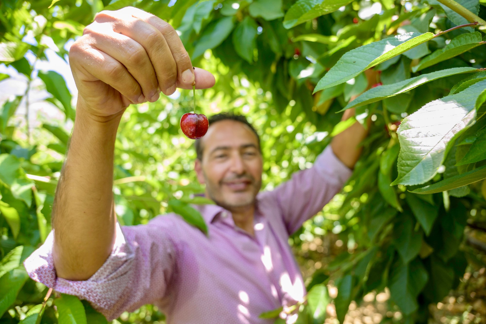

Mission
Our mission is to harness education, research, and development to advance sustainable and resilient food systems against global challenges.

.png)
The Environmental Sustainability Development Unit (ESDU) at the American University of Beirut (AUB) champions community-led development, resilient food systems, and inclusive growth— bridging academia and the field.
Grounded in research. Powered by communities. Focused on lasting change.
Our mission is to harness education, research, and development to advance sustainable and resilient food systems against global challenges.

Our vision is for a world where communities and ecosystems thrive together, achieving food security, environmental sustainability, and social equity.
Experience ESDU's journey through 25 years of impact, innovation, and community transformation.
Explore how ESDU translates research into impactful solutions.
Translating applied research into tangible community solutions that advance sustainability and resilience.

Building capacities through CEC courses, school programs, and the KariaNet platform to strengthen skills and opportunities.

Supporting thousands of small actors through skills development, livelihood enhancement, and market linkages.

Collaborating with major partners, research centers, and donors to scale impact across the MENA and Mediterranean regions.

Producing evidence and sharing lessons through conferences, publications, and regional networks and communities of practice.

Demonstrating real-world impact through flagship programs and living examples of sustainable transformation.
Five interconnected pillars guiding ESDU's next chapter.
Advancing circular economy, AI, sustainable design, food systems, and heritage through cutting-edge research and innovation.
Driving education for sustainable food systems through online platforms, school programs, and Continuing Education Center (CEC) courses, expanding scholarships and regional student outreach.

Fostering community action, strategic partnerships, and network-based approaches for transformative change.

Empowering AI and digital literacy, innovation, and global collaboration for a smarter sustainable future.
Ensuring institutional resilience through team growth, creative fundraising, and strong partnerships.

A Keeper of the Land is anyone dedicated to preserving and protecting our heritage, agriculture, and natural resources for future generations. ESDU's flagship initiative connects small producers to markets, supports land stewards with resources and recognition, and sustains rural livelihoods through the Keepers of the Land Research Fund launched in 2015.
People at the Center • Embedding Research into Development • Embedding Relief into Community Systems • Education for Sustainable Futures
Explore the InitiativeNumbers that reflect community-led growth and recognition.
Explore our diverse portfolio of initiatives driving sustainable development.
Enduring partnerships across the globe.
Download the latest portfolios to dive deeper into our activities and impact